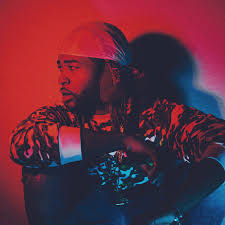

PartyNextDoor
R&B
PARTYNEXTDOOR, de son vrai nom Jahron Anthony Brathwaite, est un chanteur, rappeur et producteur canadien né en 1993 à Mississauga. Il devient le premier artiste signé sur le label OVO Sound de Drake. Son univers mélange R&B contemporain, hip-hop et sonorités atmosphériques. Ses principaux albums sont PARTYNEXTDOOR, PARTYNEXTDOOR TWO, PARTYNEXTDOOR 3, PARTYNEXTDOOR 4 et PARTYNEXTDOOR 4.
Discographie

PartyNextDoor 3
Best track: Break From Toronto

PartyNextDoor 4
Best track: Loyal

PartyNextDoor Two (2014)
Best track: Muse

Partymobile (2020)
Best track: Believe It

Some Sexy Songs 4 U (2025, avec Drake)
Best track: Nokia